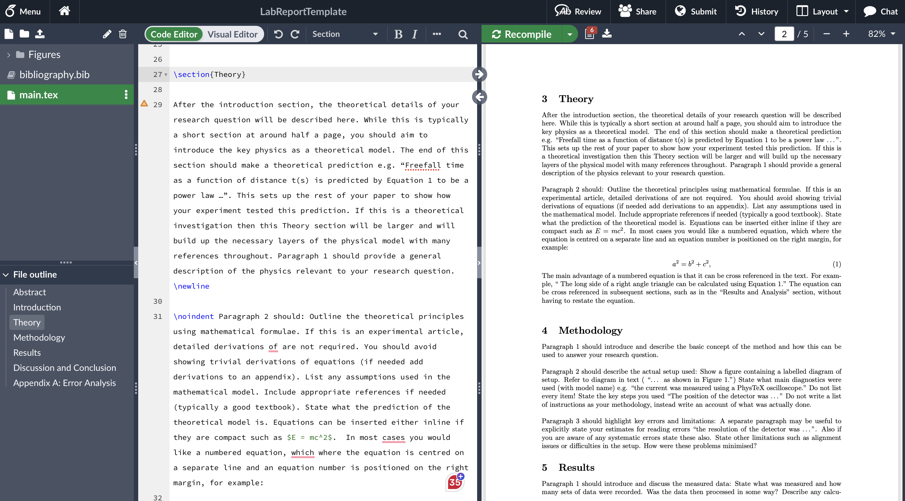
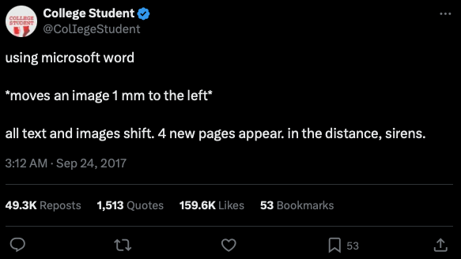
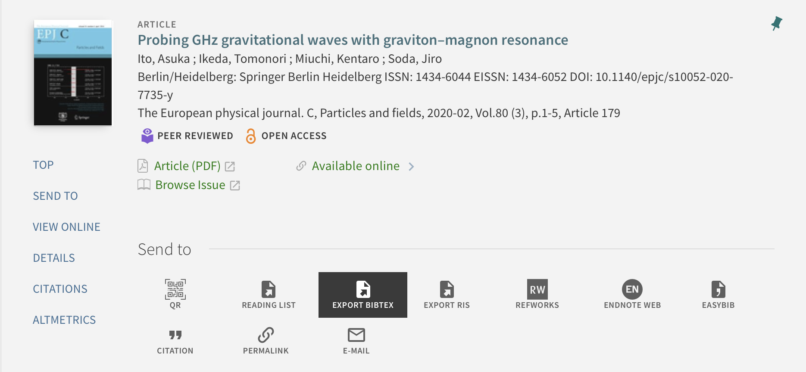
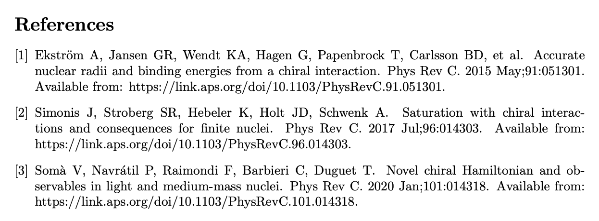
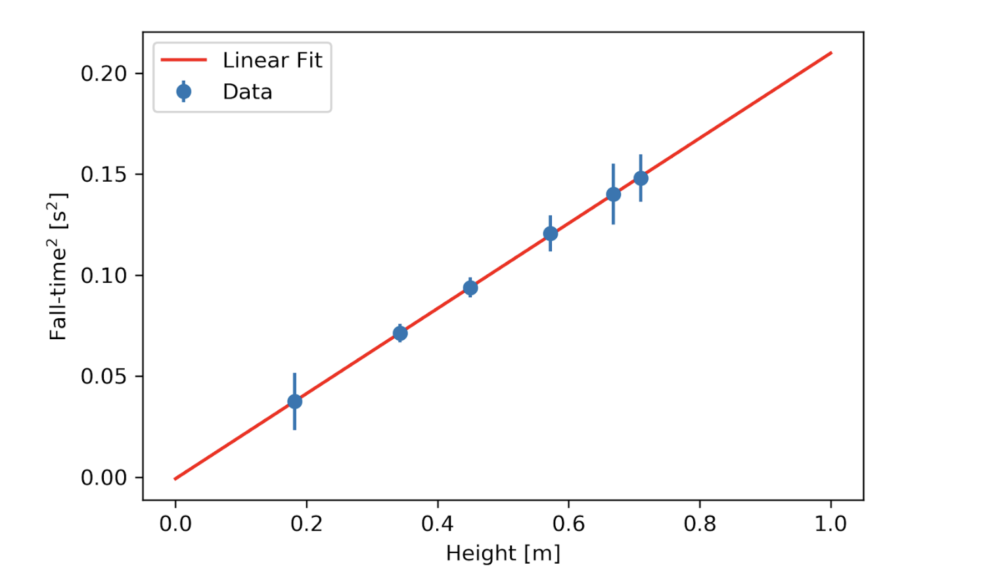

LaTeX, Results, Discussion and Conclusion#
Learning Objectives:#
By the end of this session you should:
Understand how to present information in a results section.
Have written drafts of the results, discussion and conclusion of a lab report.
In this session, we are going to work towards writing the results, discussion and conclusion for one of your lab experiments.
LaTeX and Overleaf#
Overleaf is a little like Google docs, but for writing in LaTeX, which is a type of code we can use to write documents. While you are under no obligation to start using it, we thought it would be worth letting you know about it as all you need to do is make a free account.
Overleaf allows you to edit your LaTeX code and see a realtime render of what your document will look like as shown below:

Learning to use LaTeX is a worthwhile skill as:
Almost all physics papers published in reputable journals are formatted using LaTeX.
Writing out equations in LaTeX is much easier than in Word or Google Docs.
LaTeX can build your bibliography for you.
Cross referencing of equations and figures is automatic.
The document self formats text, equations and images! Meaning no more of this…

Note
If you would like to make an account on Overleaf, you can do so using your university email here. Once you have made an account, you may wish to make a copy of this simple report template.
Writing Equations#
As mentioned above, one of the key reasons people use LaTeX is that is very easy to format mathematical equations using it. This is obviously very useful to a Physicist who will likely format many equations in each report they write. To write an inline equation we place the expression between dollar signs, but to get a numbered equation on its own line we use:
\begin{equation}
E = mc^2.
\end{equation}
This will render the equation as follows:
To raise something to the power, we simply use “^”. This will superscript the character following it. To superscript multiple characters we simply follow “^” with curly brackets, for example:
\begin{equation}
E = mc^{2x + c},
\end{equation}
will return:
Similarly, if we would like to subscript something, we just use the underscore “_”. If we want to introduce a greek letter, we simply type it out following a backslash. If we capitalise the name of the letter, it will return the capitalised symbol - be careful with this as capitalised and lowercase greek letters are often used to represent different things in Physics. Take a look at the following equation in Latex format and see if you can decipher what it will render as:
\begin{equation}
\Delta Z = z \sqrt{ \left( \frac{\Delta A}{A} \right)^2 + \left( \frac{\Delta B}{B} \right)^2 }.
\end{equation}
This renders as:
You will note that we have introduced fractions and square roots in this example as well as Greek letters. The “\left” and “\right” commands just ensure that the size of the brackets used is correct e.g. omitting them in this example would give regular brackets that do not fit around the fractions:
LaTeX Equations Reference Materials
Rendering simple equations in LaTeX is quick and easy, but you may want to refer to the following materials to learn more about using “Math mode”:
Adding Figures#
A report would not be complete without diagrams of the experimental setup or plots of the results obtained. When using Word or Google Docs we can simply copy and paste a figure, but in Overleaf we must call the figure in.
You will notice that in the template in the left-hand menu there is a folder called figures. If you open this folder you will see the names of the various image files and if you click on these you will see a preview of them. This is the folder you should upload your figures to. When making high quality plots, you should save the figure as a png file rather than screenshot it to preserve quality.
To add figures into the main.tex file is very similar to calling an equation, see below
\begin{figure}[h!]
\centering
\includegraphics[width=0.9\linewidth]{Figures/ReportFigure.png}
\caption{A diagram depicting the experimental setup. The figure caption should be self-contained, meaning there is sufficient information that somebody reading it would understand the figure without needing to look at the main body of text.}
\label{ExperimentalSetup}
\end{figure}
There are few things to take note of in the code above:
“[h!]” - by default LaTeX will place a figure in the position it thinks is best, however this sometimes results in the figure being far away from where it is referenced in the text. By adding “[h!]” to the first line of code, we are telling LaTeX that we want it “here!”
“\centering” - this simply makes sure that the figure is centre justified.
“\includegraphics[width=0.9\linewidth]{Figures/ReportFigure.png}” - this line of code is used to specify which image we want to use in the figure, you will note that we have to tell LaTeX the folder that the figure is saved in e.g. “Figures/ReportFigure.png”. This is also where we can adjust the width of the figure, relative to the width that a line of text takes up.
“\caption{}”- this is where we would write our figure caption.
“\label{}” - by giving the figure a label, it means that we can cross reference it later in the main body of text without having to worry if it is figure 1, 2, 3 etc. LaTeX is smart enough to do this for us. You can also add labels to equations for the same purpose!
Citations and Cross References#
As mentioned above, LaTeX will automatically update figure and equation numbers as we add more or change their order. To save us the time of manually needing to go through the entire document and change the citation, figure or equation numbers in the main body of text, we may use “\cite{}” or “\ref{}”.
When we use “\cite{}”, we type the name of our reference from bibliography.bib into the curly brackets. LaTeX is will then insert the citation and know the order of your references when building the bibliography.
When we use “\ref{}” we type the name of the label given to one of the figures or equations in the main body of text.
Bibliography#
The ability to quickly build a complete bibliography is one of the most powerful features within LaTeX. To do this we first need a “.bib” file, which is where we save all of the information for a given reference.We need to input the information in a very specific format known as “bibtex”. Using StarPlus, we can download a txt file containing the bibtex information, as shown below:

We can then copy and paste the contents of our file into the “.bib” file in overleaf: this will look something like this:
@article{Simonis_2017,
title = {Saturation with chiral interactions and consequences for finite nuclei},
author = {Simonis, J. and Stroberg, S. R. and Hebeler, K. and Holt, J. D. and Schwenk, A.},
journal = {Phys. Rev. C},
volume = {96},
issue = {1},
pages = {014303},
numpages = {11},
year = {2017},
month = {Jul},
publisher = {American Physical Society},
doi = {10.1103/PhysRevC.96.014303},
url = {https://link.aps.org/doi/10.1103/PhysRevC.96.014303}
}
Now if we want to add a citation into our text for this given reference, we would simply type \cite{Simonis_2017}. To build a bibliography we just need to add the appropriate command at the end of our main.tex file:
\bibliographystyle{vancouver}
\setcitestyle{numbers,square}
\bibliography{bibliography.bib}
The three lines of code above tell LaTeX to build a bibliography using the information from the file bibliography.bib file and using numbers in square brackets.
This bibliography is going to be built using the “vancouver” style, which is a reference style commonly used in medicine and biomedical sciences. It is not disimilar to AIP as it uses numbered citations and presents the reference in a similar way.
Although it would be preferred that you cite using AIP, should you choose to work in LaTeX it is acceptable to use this reference style for the time being as automatic AIP reference generation is not as easily achieved using Overleaf. This is something you should look into as you become more familiar with LaTeX and Overleaf. The bibliography made using the lines of code above from the report template is shown below:

Activities#
In this session you are going to draft the results, discussion and conclusion sections of a lab report for one of the experiments that you performed earlier in the semester. This can either be the “An investigation into acceleration” experiment or the “Moment of inertia and rotational motion” experiment as you have already written this section of a lab report for the “conservation of momentum” lab for your homework. You should however review the feedback provided on your homework to see where improvements can be made this time round. You will then have the opportunity to try and format it using Overleaf, which is an online LaTeX editor.
1. Produce a High Quality Plot#
For your chosen experiment, produce a plot that contains the features of a high quality plot of your results for you to talk about later.
2. Write the Analysis and Results Section#
Using the structure from the lab report template below, write the anaylsis and results section of a report.
Suggested Results Structure
Paragraph 1 should introduce and discuss the measured data:
State what was measured and how many sets of data were recorded
Was the data then processed in some way? Describe any calculations clearly.
Refer to the figure containing the graph with caption.
Describe the trend in the measured data.
Are any outliers present?
State that the error bars represent the error on the mean .
State range of statistical errors e.g. “ variation of 15% ..”
Comment briefly on any other issues with the measured data.

Figure 1: Measurements of free-fall for a steel sphere. A least squares fit of the data is also shown. The spheres had mass of 100g and initial velocity of zero. Error bars on the y-data are calculated using the standard error of the mean of repeat measurements. The x errorbars are too small to be seen.
Paragraph 2: After introducing the measured data, next describe the analysis methods. In most cases, this may be a linear correlation analysis. First describe what the goal of the analysis is and describe the method used:
Was a linearisation of the data or other processing required?
Was a least squares fit, a weighted (chi-squared) fit used?
Were the error bars of the measured data considered in the analysis?
Refer back to the figure stating that “this linear analysis is also shown in Fig. 1.”
Paragraph 3 is where you should state the analysis results:
What was the goodness of fit? (See correlation coefficient, r2, for linear fit or discuss reduced chi-sqaure.)
Did the fit produce a key parameter such as the slope or intercept?
State slope±error with units
State intercept±error with units
Ensure errors are rounded to 1 significant figure. Next ensure that both slope and intercept values are rounded to the same number of decimal places as their respective errors
Use the analysis results to calculate parameters of interest. This typically involves using the slope and it’s error value. For example, if the value of the slope (m) was being used to determine the acceleration due to gravity then \(g=m\) and the uncertainty or error on the value of \(g\) is the error on the slope, \(\Delta m\). given by:
In more complex cases involving multiple sources of errors, present a full error propagation here as per your lectures.
State the final result: “from this analysis a result of \(g=9.77 \pm 0.07\,\) m\(\,\)s\(^2\) was calculated.”.
3. Write the Discussion and Conclusion#
Using the structure from the lab report template below, write the discussion and conclusion sections of a report.
Suggested Discussion Structure
Paragraph 1 is where you will interpret and discuss the analysis results:
What do the slope, intercept, r2 values mean?
Describe their physical significance.
Discuss the uncertainties/errors.
Were they large >10% or quite small ~1%?
What was the primary source of error?
Was there any sign of systematic errors such as a non-zero intercept?
Paragraph 2:
State again the overall result e.g. \( g = 9.77 \pm 0.07 \,m\,s^2\).
Is the result valid? How does it compare with theory?
Compare with other known or accepted data.
Find references to other published work if possible.
Keep your tone objective and critical with regards to your results.
Describe aspects that could be improved in the future. Try to be specific here. How would you redesign the experiment? Are there any examples in the published literature you could follow? Provide references and cite them numerically [1].
Paragraph 3: A short paragraph stating main results and limitations.
5. Writing a Report in LaTeX#
Now that you have written all of the major components of a report, I would like you to try and convert this into a LaTeX document using Overleaf.
I have made a template for you to use and you can find it here. You will need to save your own copy of the template in order to edit it.
Before editing the written code, take a look at how the software structures the report.